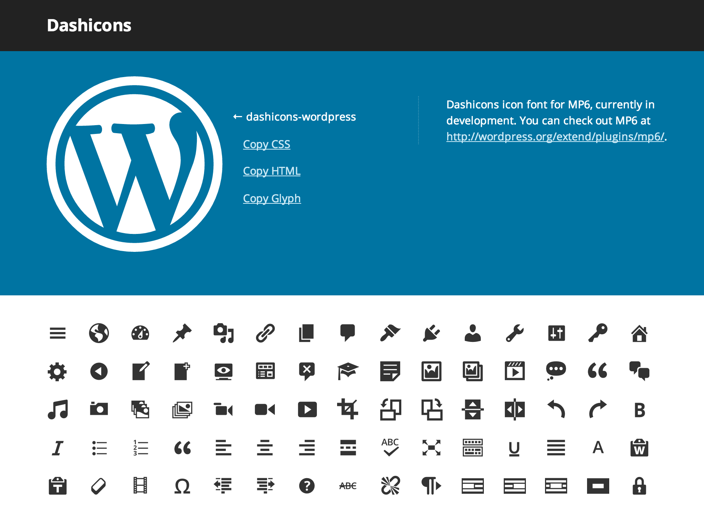
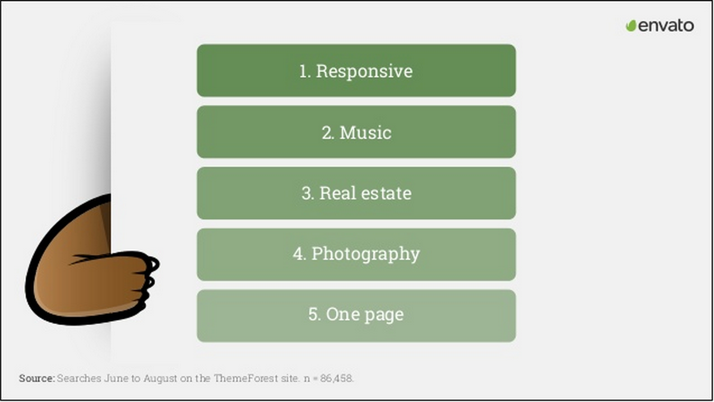
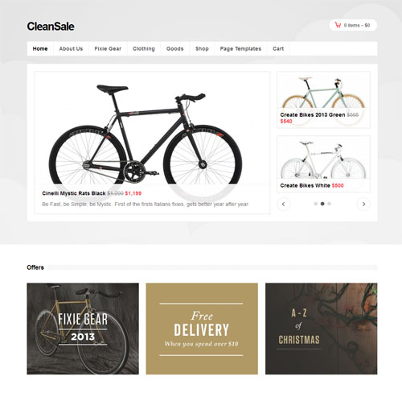
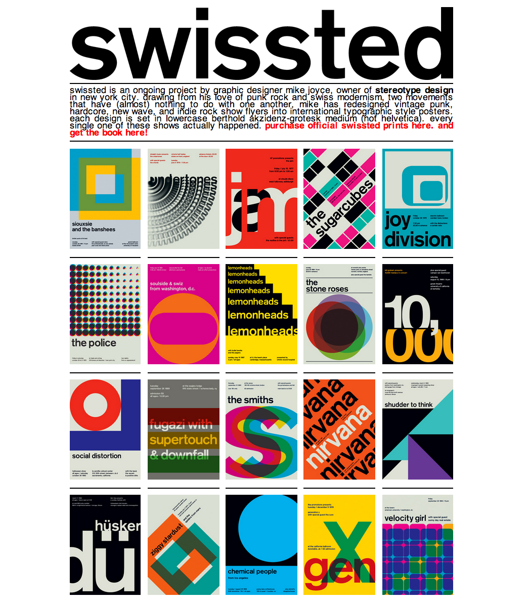
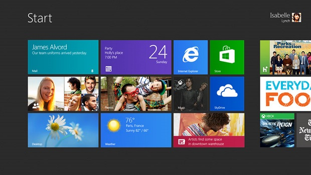

WordPress Design Trends
I am Mel Choyce
- Boston-based UI/UX Designer
- WordPress Core Contributor
- Work at Automattic
- @melchoyce | choycedesign.com | melchoyce.com
Today, we're gonna talk about
THEMES
Themes are becoming more
FLEXIBLE
Themes are becoming more
SPECIALIZED
Themes are becoming better
DESIGNED
Flexibility
Responsive Web Design


Term coined by Ethan Marcotte
Helped inspire "mobile first"
(which then turned into "content first")
...Which went on to inspire "content first"

#1 requested feature on Theme Forest in 2013
Source: Helen Souness's PressNomics Presentation 2013Not a trend, but an expectation
Go responsive or go home

If you've ever designed a responsive website or theme...
Resolution Independent

Design for Retina
(But "retina" is only the beginning)
CSS > Images
If you need images, include @ 2x
Scalable

SVG
Icon Fonts
Specialization
Generalization → Specialization
WordPress for ___
Customers want niche
 Source: Helen Souness's PressNomics Presentation 2013E-Commerce
Beyond "CMS"
p2

Capsule

Visual Design Trends
Trends are just tools
Flat Design
Alfie
Characterized by:
- Lack of textures, gradients, and shadows
- Blocks of solid color
- Really clean typography, often using humanist sans-serifs
Flat =/= Skeumorphic
Flat can also be skeumorphic
Roots in the Swiss style of print design
swissted.com Metro
Flat Design, iOS 7, Skeuomorphism and All That Post-Metro
Aspects of flat design have been picked up by Google, iOS7,
and the design community at large
Lack of Affordance
Bigger is Better
Big Images
Forefront
Big Text
Wentasi
Animation
Flatco
Web → Mobile → Web
Collapsible Navigation ("hamburger buttons")
Reader First
Translucency and Blur